Lasern strålegenskaper

Laserstrålens tvärsnitt uppvisar vad vi brukar kalla en gaussisk profil dvs intensiteten avtar gradbis med ökande radie såsom i figuren. Det är därför svårt att definiera en exakt radie. man har som konvention (egentligen av matematiska skäl) valt att definiera strålradien (=w) som den radie där intensiteten gått ner en faktor e² (=7.4) från sitt maxvärde i mitten av strålen. Innanför denna radie ligger 94% av energin, och den är därför ett bra mått på hur stor yta energin är spridd över. Däremot kan man inte dra någon slutsats om hur stor en öppning eller en lins ska vara för att släppa igenom strålen direkt från w, eftersom man får
diffraktion i linsen även om den skär utanför w. Som tumregel brukar man ta att dubbla w i öppningsradie gör att strålen blir praktiskt taget opåverkad av diffraktion.När man talar om strålens divergens menar man ökningen i w per avstånd från lasern, mätt i mrad. Detta gäller egentligen bara på stort avstånd från lasern (se nivå 2 nedan), men allmännt gäller att divergens ges av 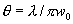där w0 är strålens w-radie precis vid utkopplingen ur lasern.
Ex: Hur stor blir den intensiteten i en spot belyst av en 10mW HeNe laser med våglängd 633nm på 100m avstånd om w0=0.50mm?
Joo..Laserljus är vidare ofta pulsat (för att en detektor lättare ska känna igen det i en stark, brusig bakgrund av solljus och andra inkoherenta ljuskällor), med pulsrepetionsfrekvens (PRF) menar man då antal pulser per sekund, ett värde som för en mätlaser typiskt ligger runt 1kHz.
Pulslängden T, beror av vilken mekanism man använt för att pulsa ljuset, men med en av de vanligaste (Q-switchning, nivå 2 nedan förståss, vad annars?) blir den typiskt ca 20ns.
Sambandet mellan laserns medeleffekt och pulsens toppeffekt blir då:
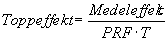
Ur topp- och medeleffekt får man sedan resp intensitet genom att dela med belyst fläcks yta
Strålegenskaper nivå 2
Vi ljög (eller undanhöll sanningen) på förra sidan. Man använder aldrig plana speglat i en alser eftersom vinkelinjusteringskraven skulle bli alldeles för stora för en komersiell produkt (ngn µrad dvs ett granbarr på 1km behövs). Bakre spegeln är alltså svagt krökt. Detta har två konsekvenser:
Strålens intensitet får en Gaussisk fördelning dvs 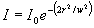, vilket ger den intensitetfördelning som framgår av plotten ovan.
Strålens smalaste punkt (där w=w0) kommer att ligga vid utkopplingsspegeln. Vi väljer detta som utgångspunkt för en z-axel utmed strålen, dvs z=0 vid utkopplingsspegeln.
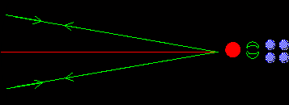
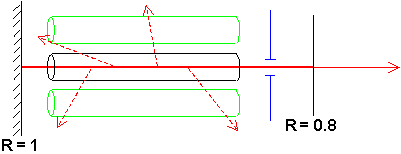Det kommer att finnas oönskade vägar för ljuset att lasra (=uppleva rundgång) som kan förstöra strålen kvalitet om man inte begränsar deras framfart. Exempelvis kan ljuset studsa varannann gång i överdel av den krökta spegeln och varannan gång i underdel. Detta skulle ju en utkopplad stråle som ser ut som den gröna träffbilden i fig (i motsats till den röda som är den man vill ha). En mer komplicerad tredimensionell variant är den blå. Dessa oönskade ljusfördelningar brukar kallas högre transversella moder och bekämpas enklast med en apertur placerad nära utkopplingsspegeln som ger större förluster för de högre moderna än för grundmoden (=den önskade som brukar kallas TEM00). Modrenhet är alltså en viktigt kvalitetsmått och brukar kvantifieras som hur många procent av ljuset som ligger i TEM00.
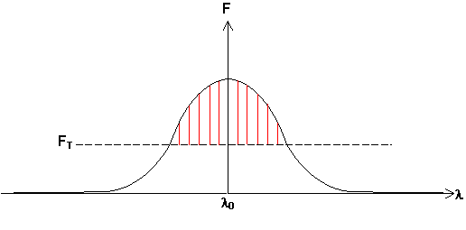Det finns en annan typ av moder som kallas longitudinella som har med våglängdsrenhet att göra. Dessa uppkommer därför att den våglängd som "kan lasra", dvs kan bli förstärkt av ett givet lasermaterial, inte är exakt definierad utan har en viss spridning, oftast av storleksordning 0.01-0.1nm. Förstärkningen som funktion av våglängd ser då ut som den svarta kurvan i fig, spridd runt en mittvåglängd.
FT i figuren är den förstärkning som är tillräcklig för att kompensera förlusterna genom utkopplingsspegeln, dvs 1/R. Enbarft de våglängder där förstärkningen (F) är större än denna tröskel kan lasra. men det finns ett villkor till.
L Enbart våglängder för vilka en rundtripp i laser är ett helt antal våglängder kan lasra, annars skulle strålen i kaviteten interferera destruktivt med sig själv efter ett varv.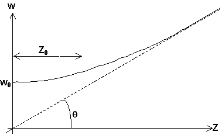Villkoret blir alltså att 2L =p
l (eller hur). Detta innebär att ngt tiotal sådana våglängder får plats under den del av förstärkningskurva som ligger över tröskel. Varför? För vanliga tillämpningar och vanliga lasrar har detta ingen betydelse. Men för halvledarlasrar (med längder runt 100µm) och i avståndsmätningar med stora noggrannhetskrav är det väsentligt.Löser man vågekvationen för laserkaviteten kommer man fram till att strålen w-radie runt en midja beter sig som
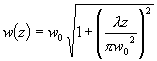
där z=0 vid midjan, till exempel vid utkopplingsspegeln, men också vid den midja som uppkommer om man fokuserar strålen mha en lins. Plottar man w(z) får man:
Midjan går alltså asymptotiskt mot den streckade linjen som har ekvationen
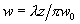
(Försumma ettan i ekvationen och räkna på! För tillräckligt stora z blir ettan oväsentlig)
Linjens vinkel med symmetriaxeln brukar kallas strålens divergens, men gäller egentligen bara då ettan kan försummas. När kan det det då??
Ett bra mått är det värde på z som gör parantesen i rotuttrycket =1. Kalla detta z-värde för z0 eller skärpedjup. När z>z0 gäller divergensuttrycket. När z<z0 är w mer eller mindre konstant. (mellan tummen och pekfingret i alla fall). Så hur stort blir det nu då? Jo sätt parantesen =1 så får vi 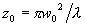
Ökar vi strålens radie vi utkopplingsspegeln får vi alltså längre skärpedjup och mindre divergens.
Räkna själv ut dessa värden för en HeNe-laser med våglängd 633nm och spotsize =0.3mm.
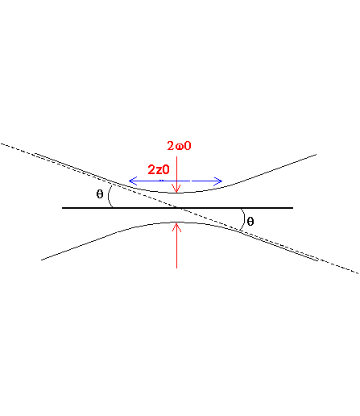Om man skulle expandera strålen en faktor 10 blir alltså skärpedjupet 100ggr längre och divergensen en tiondel så stor. Sambandet ovan gäller även vid fokusering:
Sätt strålradien in mot den fokuserande linsen till win
Då blir
q= win/f vilket kombineras med vårt tidigare uttryck för q varur vi får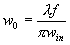
Nu kan inte strålradien göras större än halva linsradien utan att få
diffraktion, och fokallängden kan inte göras kortare än dubbla radien.Vilket ger oss att den minsta spot man överhuvudtaget kan få är en dryg våglängd i w-radie. Eller hur?
Exempel:
Man vill (av oklara skäl , gissa själv) skapa en så liten laserfläck som möjligt på 20km avstånd, med en Nd:YAG-laser, våglängd 1064nm. Hur stor ska strålen vara när den lämnar laser med teleskop, och hur stor blir den vid målet?
Ledning: w är en funktion av w0, som ska minimeras. L är 20km = konstant!
Så här gjorde jag.Pulsning
Det finns två vanliga metoder för pulsning. Den i mätsammanhang viktigaste kallas Q-switchning och bygger på att man hindrar lasern från att lasra under en tid (storleksordning 100µs) genom att helt enkelt blockera strålens väg i laserkaviteten. Förstärkningen kan då genom
pumpningen växa till värden mycket större ån 1/återkopplingen = 1/R som den annars är begränsad av. Resultatet blir att när kavitetsblockeringen väl tas bort är försärkningen så stor att strålen växer till mycket stora intensiteter under ngn enstaka rundtrippstid i kaviteten (2-3ns). Denna högintensiva stråle tömmer helt ut nivå 2 på elektroner (eftersom stimulerad emission var prop mot intensiteten). "All" lagrad energi i atomerna blir alltså ljus inom en mycket kort tidsrymd. Därefter läcker 20% (eller 1 - R om R har annat värde än 0.8) av denna ut varje rundtripp. Man får alltså en laserpuls vars intensitet stiger under ca 2-5ns och sedan avtar under 10-50ns. Toppeffekten i denna brukar ligga på ca 10000ggr effekten av samma laser körd kontinuerligt. Medeleffekten sjunker alltså ganska lite trots att laser hindras från att lasra under större delen av tidenEtt annat fenomen som bygger interferens mellan moderna (svävning) kallas modlåsning och ger pulser med längd 10-100ps och
PRF (vad var det nu igen?) på hundratals MHz
Till
nästa sida (Lasertyper)Till
nästa kapitel (Vågoptik) (enbart nivå 2+3)Till
nästa nivå-1 kapitel (Modern optronik)Till
innehållsförteckningen